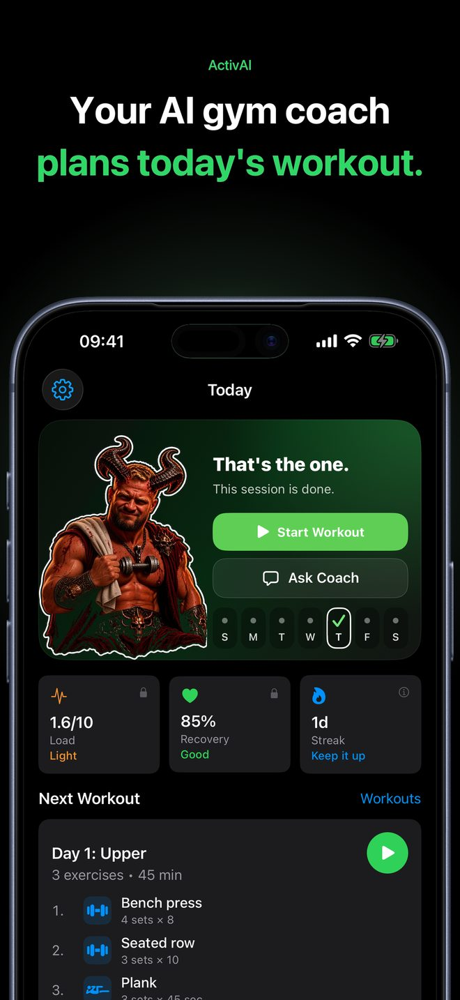
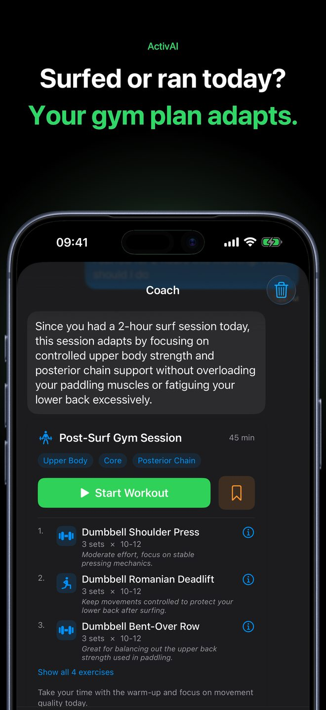
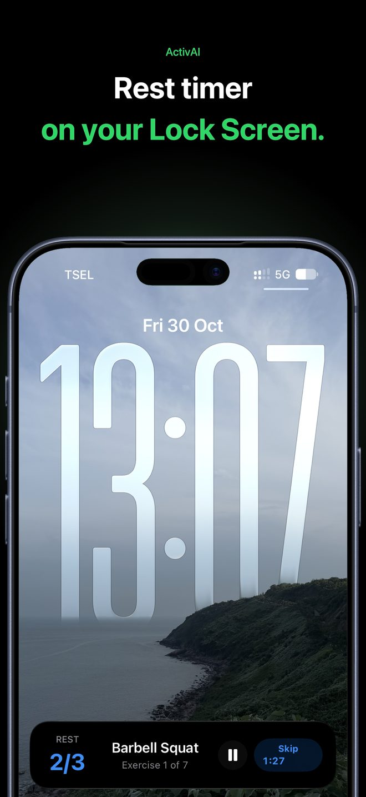

Your AI gym coach plans today's workout.
Ask for a session that fits your goal and equipment, or paste a plan you already have. Then train it set by set, with weights, reps and rest timers logged as you go.
Download on the App StoreFree to download. iPhone, with Apple Watch controls in ActivAI Pro.


Paste any plan. Train it set by set.
Got a plan from ChatGPT, a trainer or your notes? Paste the text into Coach. ActivAI reads the days, exercises, sets, reps and rest, and shows the result for you to check before you train.
Multi-day programs are followed day by day with ActivAI Pro. How to turn a ChatGPT workout plan into a tracked workout

Log every set, rep and rest.
One exercise on screen at a time. Adjust weight and reps with simple buttons, complete the set, and the rest timer starts. You see your last recorded weight and reps for the exercise.

Surfed or ran today? Your gym plan adapts.
Log your surf, padel, runs, rides or other sports. When you ask for a session, the coach takes your recent activity into account.

Rest timer on your Lock Screen.
Follow rest and timed exercises on the Lock Screen and Dynamic Island. Home Screen widgets show your next workout.
Free and Pro
Free
- Workout tracking: sets, reps and weight
- Rest timers, interval timer and Lock Screen timers
- Workout history and activity logging
- 5 coach messages a day
- Up to 3 saved workouts
ActivAI Pro
- Follow multi-day programs
- More coaching and no limit on saved workouts
- Exercise progress charts and weekly coach reports
- Apple Watch workout controls (paired iPhone required)
Pro is an optional auto-renewing subscription. Prices and any introductory offer you are eligible for are shown in the app before purchase.
Questions
Can I use a workout plan from ChatGPT?
Yes. Copy the plan text, open Coach in ActivAI, choose Paste plan and paste it. You review the exercises, sets, reps and rest before you start.
Do I need an account?
No. There is no sign-up. Your workouts are stored on your iPhone.
Which languages does the app support?
English and Russian.
Does it work with Apple Health?
Optionally. You can import activities from Apple Health and save completed workouts to it.
Does the coach need the internet?
Coach requests need an internet connection and your permission to send the request to the AI service. Tracking a saved workout works offline.